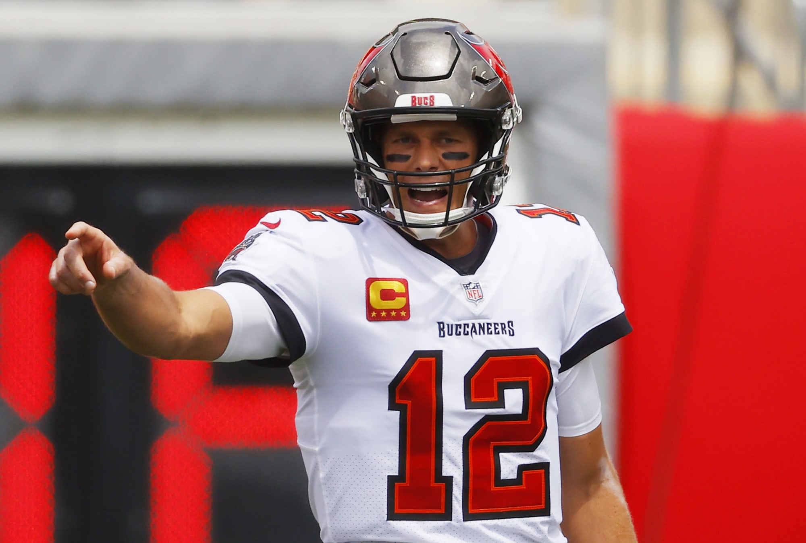
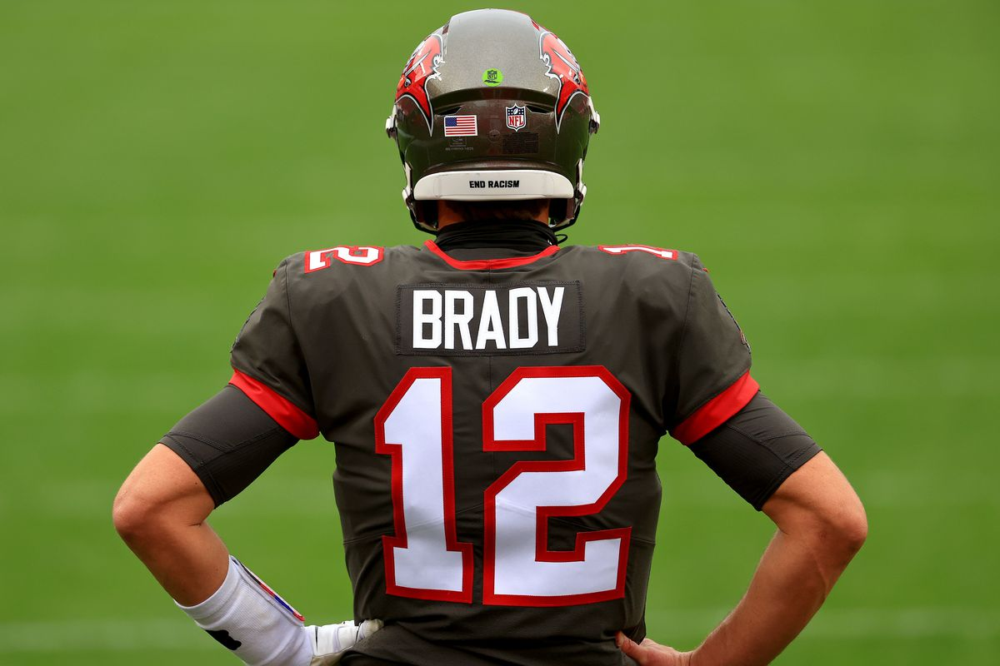
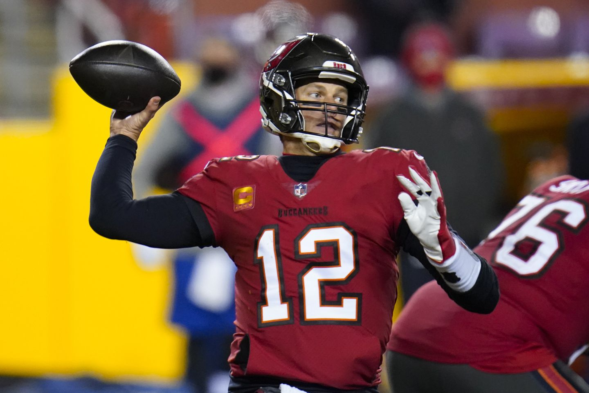
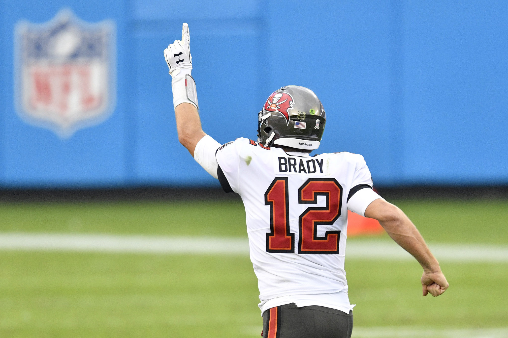

Tom Brady




Tom Brady, #12: seven-time Super Bowl-winning NFL quarterback for the Tampa Bay Buccaneers.
Just a few of Tom Brady's achievements:
- 7× Super Bowl champion (XXXVI, XXXVIII, XXXIX, XLIX, LI, LIII, LV)
- 5× Super Bowl MVP (XXXVI, XXXVIII, XLIX, LI, LV)
- 3× NFL Most Valuable Player (2007, 2010, 2017)
- 2× NFL Offensive Player of the Year (2007, 2010)
- 14× Pro Bowl (2001, 2004, 2005, 2007, 2009–2018)
"You wanna know which ring is my favorite? The next one." -- Tom Brady